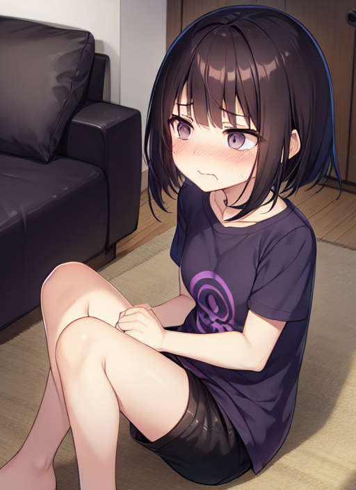

名札
夏休みのある日、北大路中学２年の瀬戸あつきは同じクラスの丸山卓也と一緒に卓也の家で夏休みの宿題をやっていた。
「やっぱり宿題は協力してやるに限るな。」
「そう言うわりに、あつきはさっきから手が動いてないけど、どうしたのかな？」
「うるさいなー。」
協力してやる、というよりはあつきが卓也に頼って宿題を片付けていると言ったほうが正しいのかもしれない。
「さすがにぶっ続けでやると疲れてくるな…。」
「そうだね。ここらへんで休憩しようか。」
しばらくして、２人は休憩を取ることにした。
「あつき、今朝お母さんが買ってきたケーキがあるから取ってくるね。」
「マジで！？」
「うん。ついでにジュースも取ってくるから、ちょっと待っててね。」
「へーい。」
そう言って、卓也は部屋を出ていきケーキとジュースを取りに行った。 だが、取りに行くと言ってから５分経っても卓也は戻ってこない。
「あいつ、なにしてるんだよ。」
待ちくたびれたあつきは、暇つぶしに卓也の勉強机の引き出しを開け始めた。
「何か入ってるかな？」
しらみつぶしに引き出しの中をのぞくあつき。
「おっ、これはなつかしい。」
そう言って手にしたのは、２人がかつて通っていた北川小学校の名札だった。
「んでもこの名札、なんで学年と名前が書かれてないんだ？」
未使用の名札を見て疑問に思うあつき。
すると、手にしてた名札が光りだしたと同時にあつきの服の左胸あたりにくっついたのだ。
「うわっ！？」
驚きのあまり大声を出すあつき。 それと同時に、あつきのからだに変化が起こり始めた。 150cmほどあった身長が130cmぐらいにまで縮んでいき、少しばかりついてきた手や足の筋肉もなくなり、柔らかいムダ毛のないツルツルとしたものに変わっていった。 スポーツ刈りの髪の毛も肩にかからないくらいまで伸びはじめ、顔つきも女子のようなプニプニとしたかわいらしいものとなった。 男子についているアレも体の中に吸い込まれるようになくなっていき、胸も少しではあるが膨らみはじめていき、お尻もプルプルと弾むくらいになった。
「い、一体どうなっているの・・・？」
自分のからだの変化に戸惑うあつき。 あつきから発せられた声も、ハスキーな女の子の声に変わっていたのだ。 そして、体の変化が終わったと同時に服装のも変化が。 ぶかぶかだった青色のTシャツは紫色の女の子が着そうなTシャツに変わり、ジーパンは裾が短くなっていきショートパンツとなった。 そして、胸元にくっついた小学校の名札には『６年２組 丸山優奈』と名前が書かれていった。
数分後、あつきに起こっていた変化が収まった。
「一体、私どうなったの・・・？」
あつきは自分の姿を確認すべく、鏡の前まで向かった。
「嘘…。私、女子小学生になっちゃってる…。」
鏡の姿はを見ると、そこに映っているのはかわいらしい女子小学生の姿だった。 しかも、胸元の名札を見ると『丸山優奈』と書かれている 。
「もしかして、私って卓也の妹になったってこと？」
そうつぶやいた瞬間。
「あ、頭が痛い！！ 痛いよ！！」
突如ひどい頭痛に襲われ、あつきはその場で気を失った。
「優奈、起きろって！？」
卓也に起こされて目を覚ましたあつきだった女の子。
「あれ？ 私、いつの間に居眠りしてたんだろう…❓」
どうやら、眠っている間に記憶が書き換えられてしまったようだ。
「まったく、宿題でわからないところがあるから教えてほしいってオレの部屋に来ておいて、途中で居眠りだなんてさ。」
「ごめん、お兄ちゃん。午前中にプール出校日で学校に行ってたから、その疲れが出ちゃったみたい…。」
「だらしがないなー。本当に優奈は６年生か？」
「６年生ですよー。ほーら！」
卓也にバカにされた事でムキになったあつき改め優奈は、胸元の学校の名札を卓也に見せつけるのだった。
「ハイハイ、わかりました。とりあえず、わからないところは他にありますか？ ６年２組丸山優奈さん。」
「はい、えーと…。」
こうして、あつきは学校の名札によって卓也の妹である丸山優奈となり、丸山家の家族として仲良く過ごすのであった。